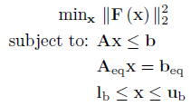
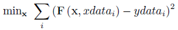
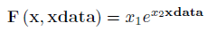
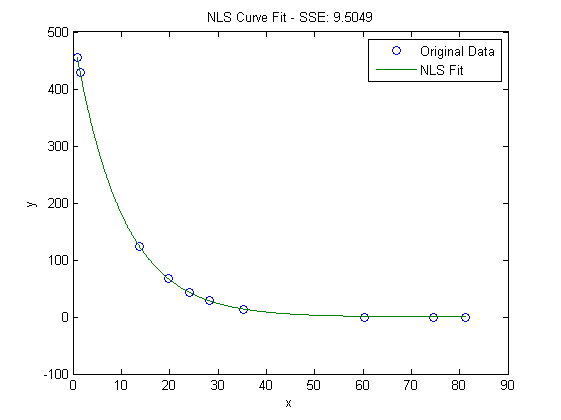

Nonlinear Least Squares (NLS)
Introduction
A nonlinear least squares problem has the following form:

Where f is a function containing the nonlinear objective function, which is subject to the following constraints:
Linear Inequalities
A is a m x n
sparse matrix, b is a m x 1 vector
Linear Equalities
Aeq is a k x n sparse matrix, beq
is a k x 1 vector
Decision Variable Bounds
lb and ub are n x 1 vectors,
where -inf or inf indicate an unbounded lower or upper bound, respectively
The goal is to minimize the objective function by selecting a value of x that also satisfies all constraints. Note this problem can also be written as a curve fitting problem using the following, functionally equivalent, objective function:

Example Problem
The below function has been chosen to fit to a series of points in the below example (xdata, ydata). The problem is to obtain the coefficients x1 and x2 such as to minimize the sum of least squares objective.

The fitting function can be written as a Matlab anonymous function suitable for use with OPTI:
% Function to Fit
fun = @(x,xdata) x(1)*exp(x(2)*xdata);
% Fitting Data
xdata = [0.9 1.5 13.8 19.8 24.1 28.2 35.2 60.3 74.6 81.3];
ydata = [455.2 428.6 124.1 67.3 43.2 28.1 13.1 -0.4 -1.3 -1.5];
This can be solved using the OPTI Toolbox as follows:
% Build OPTI Problem
Opt = opti('fun',fun,'data',xdata,ydata,'ndec',2)
% Solve
x0 = [300;-1];
x = solve(Opt,x0)
And the solution is:
x =
498.8309
-0.1013
When both xdata and ydata are supplied the resulting fit can be plotted:

As with UNO and NLP problems, if the constructor cannot determine the number decision variables in your problem (for example all arguments are nonlinear functions), then you must supply this explicitly to optiprob.
Solving NLS problems can be computationally intensive and may require more time to converge. However posing a curve fitting problem as a least squares problem explicitly (i.e. as a NLS with an objective which returns a vector) rather than a NLP (i.e. sum(f(x)^2) can avoid the requirement of second derivatives as well as ensuring convergence in some algorithms, hence this is typically the best option. A good starting guess will also substantially speed up the algorithm.
Copyright © 2011-2013 Jonathan Currie (I2C2)